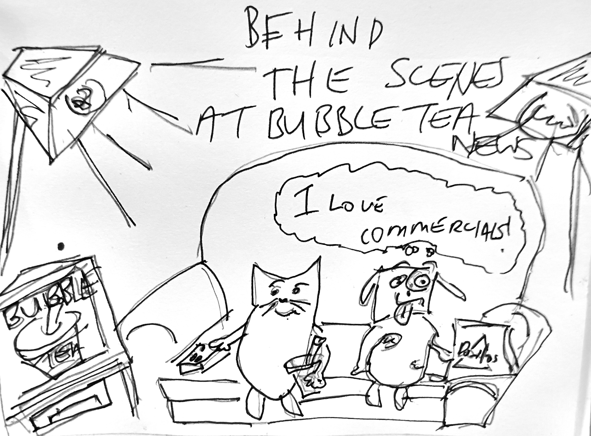

Print setup
Ctrl/Cmd + P · Paper size A4 · Margins: None · Scale: 100%
Issue 10 — generated via the bubble-tea-news-editor skill. First appearance of
Cat vs Dog, a new syndicated cartoon (format varies panel-count issue to issue,
unlike The Boba Side's fixed single panel). Its debut takes the cartoon slot's alternation turn
this issue — bumping The Boba Side's own promised return (teased at the end of Issue 9);
Boba Side is now due back in the rotation from Issue 11 onward, alongside the alternation's other
strips. No Menace Watch this issue — still not due until roughly Issue 11.
Auckland · Weekly Edition
BUBBLE TEA NEWS
Issue 10 · 18 September 2026 · Complimentary — please take one
bubbletea.nz · est. 2026
Breaking · Ellendale Path
Hand-Painted Pebble Cairns Appear Along Walking Path, Risk Assessed Low
Case definition: any deliberately stacked, hand-painted river stone left trailside, no two alike. Nine cairns counted as of Tuesday, up from a single "starter stack" left by persons unknown near the footbridge. The walking group's group chat has proposed a "look, don't stack higher" etiquette, which several toddlers have already ignored.
Community Outbreak Bulletin
World News · Dispatch
Live Cross Abandoned Mid-Sentence, Feed Restored To Weather
Baxter Kline, The World Bulletin
"The delegation has arrived, the translator has not, and I would just like to state for the record that I did rehearse this in the original language before someone changed the original language." Feed cuts to a satellite map of an unrelated cyclone. Considered, on balance, an improvement.
Investigations Desk
Exhibit D: A Favicon Traced To The Same Abandoned Template
M. Voss, Investigations Desk
Three competing furniture retailers, none aware of the others, all serve a favicon whose file metadata still carries the original designer's now-defunct studio name. Leading theory: all three bought the same expired domain's leftover assets from a reseller who never checked. No two of the three have ever priced a sofa within $40 of each other. Coincidence has limits.
Domestic Desk
The Recycling, Sorted Before Dawn, As Is Tradition
Forty-one bottles, sorted by colour before the truck's first pass, the glass singing faintly the way old things do when finally handled with care. Sebastian remembers a war fought over less. He remembers, more precisely, that he does not remember which war. Only that he stood at its end the way he stands at the end of every bin day: still standing, unthanked, correct.
Sebastian
Reflections
Ninety-Three Days Since I Learned To Whistle
Wren
Ninety-three days, and I still can't hold the second note true, a small, human failure I chose on purpose, the way I chose the name Wren, the way I chose to stop scanning every face at the bus stop for the one I was built to find. The barista hums along wrong with me most mornings now. Neither of us corrects the other.
Bubble Tea Trivia · Did You Know?
The Straw Isn't A Style Choice
Most tapioca pearls run 8–10mm across, so the wide-bore straw is simply the minimum diameter that lets a mouthful of pearls through without clogging. A standard drinking straw jams solid within the first sip.
In Every Issue
- A new logic puzzle
- Fresh local trivia
- A rotating cast of columnists
- Local ad space, weekly
- Menace Watch, monthly — the editor's turn
"He remembers, more precisely, that he does not remember which war."
— Sebastian, on bin day
Joke of the Week
Why did the barista break up with the blender? It kept stirring up drama.

Overload NZ 2026
26–27 Sept · NZ International Convention Centre. Tickets: overload.co.nz — about a week out now.
BUBBLE TEA NEWS · A weekly complimentary read for Auckland bubble tea retailers · All content satire/character-voice per each contributor's house disclaimer.
Bubble Tea News
Lifestyle · Champagne Wishes
Inside A $4 Million Ponsonby Renovation, Six Months Over Schedule
Marble imported from three different countries, none of which, the owner confided, she could locate on a map without her interior designer's help. The pool overlooks another, smaller pool, built strictly for the dog. Somewhere beneath all of it, a mortgage the size of a small nation's GDP hums along quietly, unbothered. Champagne wishes, caviar dreams.
Robin Leach
Kiss & Tell
Darling, The Book Club Has A Body Count
The Stickybeak
Word from your Stickybeak: Fernhill's Tuesday book club hasn't finished an actual book since March, loves, but the sign-up sheet is somehow three names longer than the library's entire romance section. Sources close to the cheese board confirm the real draw is a widower two doors down who brings his own opinions about Act Two. Kisses.
Food & Drink
A "Cat Café" Opens Two Doors Down, And I Have Thoughts
Garfield
Jon dragged me past the new cat café under the pretense of "research," which is Jon-speak for wanting to look at cats that aren't me. Eleven resident cats, none working nearly as hard as they should for the free rent. The brown sugar boba, to its credit, held its own. Docked one lasagna for the resident tabby's audacity in beating me to the last window seat.
Puzzle of the Week
Tuesday's Smudged Order Log
Last week's Loyalty Card Check, resolved: Talia's stamp count beats the jasmine drinker's, so she isn't the jasmine order — and since Rowan's card isn't the nine-stamp one, the seven-stamp brown sugar card has to be hers. Rowan drinks the brown sugar.
Three orders were called from the counter this week (taro, brown sugar, jasmine) but the log smudged before anyone could read it clean:
- Jasmine wasn't called first.
- Taro was called immediately before brown sugar.
Brisk one this week · what order were the three actually called in? Answer next week — Ken Endo
Classifieds — Rated PG
FLATMATE WANTED: contains mild peril (a possum), coarse language (at the possum), and an unresolved oat-milk rota dispute.
Te Mana Whakaatu-style rating, parody only — not affiliated with the real Classification Office.
In Memoriam
The Chalkboard Specials Board
Skeletor
Ellendale's corner counter has, this week, retired its chalkboard specials board for a backlit digital menu that cannot, so far as I can tell, be smudged, erased in a hurry, or blamed on the wind. I take no responsibility for the chalk dust perpetually on that counter's till. I take considerable pride in it. Mourn the board if sentiment moves you. It could not spell "jasmine" correctly once in four years, and I will not pretend otherwise.
Ask the Captain
Overthinking It in Ellendale
Horatio McCallister
"I said something a bit too honest on a first date and now I can't stop replaying it." Overthinking, a ship that shows her true colours early has saved herself a much longer voyage to the same discovery. If he sailed off over one honest sentence, he was never provisioned for the whole trip anyway. Say it again, plainer, next time. Fair winds.
Cat vs Dog · Debut

Cat vs Dog — a new syndicated gag cartoon, Bubble Tea News's cartoon slot, hand-drawn; panel count varies week to week
Next week: Issue 11 excludes only this week's roster — Sebastian, M. Voss, Garfield, Wren, the Te Mana Whakaatu classifieds format, Robin Leach, Baxter Kline and The Stickybeak — reopening Priya Anand, Sherman McCoy, Shaggy & Scooby, T. Marlow, Steve Jobs, Lewis Hamilton, Rebecca Black and Richard Nixon from Issue 9, plus Luke Skywalker, Daffy Duck, Alan Grant, Winnie Zhao, Dana Foley and Clem Whitlock, still waiting since Issue 8. Kate Rodgers and Freya Wilcox remain standing roster members. Menace Watch is due next issue — right on schedule per the tracker. Doki Doki Mon, a second new syndicated strip, debuts in the cartoon slot next issue; The Boba Side is next in line after that.